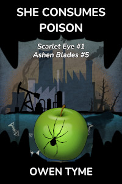

She Consumes Poison
She Consumes Poison is book five of Ashen Blades and book one of the sub-series Scarlet Eye, which centers on the adventures of a half-demon girl (the Hunter) and her friends in an ancient order of monster hunters (The Order of Ash and Smoke, also known as Ashen Blades).

Shime Yasu, a New York homicide cop, once impressed a group of monster hunters, known as the Ashen Blades, and one of them gave her their card, for the day she might be ready to see the real truth of the world. Unable to sleep and tired of being blind to the real world, Yasu calls the number and she’s brought in for training.However, before she can even begin, a demon bounty hunter shows up, looking to kill her, because Yasu’s name is part of a demonic seer’s prophesy.
Yasu trains beside an Irish teen named Nina, who has the eye of a demon, but doesn’t know how to control it, though it allows her to pierce masking spells.
After training, the two are assigned protection from some of the best the Ashen Blades have to offer, including Artemis Watson, a powerful half-demon goth girl that treats humanity like a precious flock of sheep.
Unfortunately, the demon assassins out to get Yasu are among the best money can buy, since the dark seer wants to prune the thorny branch before it can manifest the bloom of resistance.
Meanwhile, the dark seer seeks to embody one of the seven deadly sins, to replace one that chose to protect humanity. She’s aided by Gluttony, who’s slimmed down in the modern world, embracing corporate waste in place of corpulence and over-eating.
Will Yasu survive the seer’s machinations, or will that mysterious figure take the demonic eye of Nina for herself, perfecting her power to see the future, even through masking spells?
Looking For More?
The next book in Ashen Blades is Homecoming, in which the Hunter’s little life-long companion, the imp that lives in her hat, is killed and sent back to Hell, where a traitor’s fate awaits him, a fate far worse than mere death…